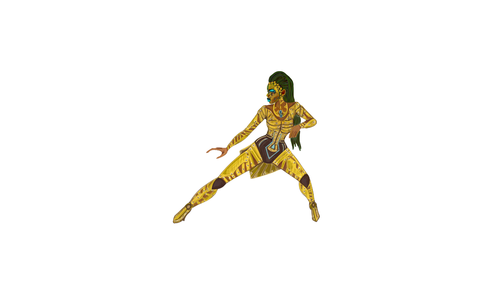

…Join our universe a and be a part of the faction that fits your personality..
Just because you are here, it does not mean that you want to be a part of the Rebllion,
You may empathize with the Dominion collective, or the Dissenters. Everyone is not born to rebel.
You can choose to defend the heirarchy of Elite society, you may choose to object to humanity and join
The Dominion Collective under the leadership of Kryos.
Or maaybe you just don't care about the philosphy of either side and you support your own progress.
In that case Join Aridyn and the Dissenters and collaborate with
whatever faction promotes your personal goals for the moment.
